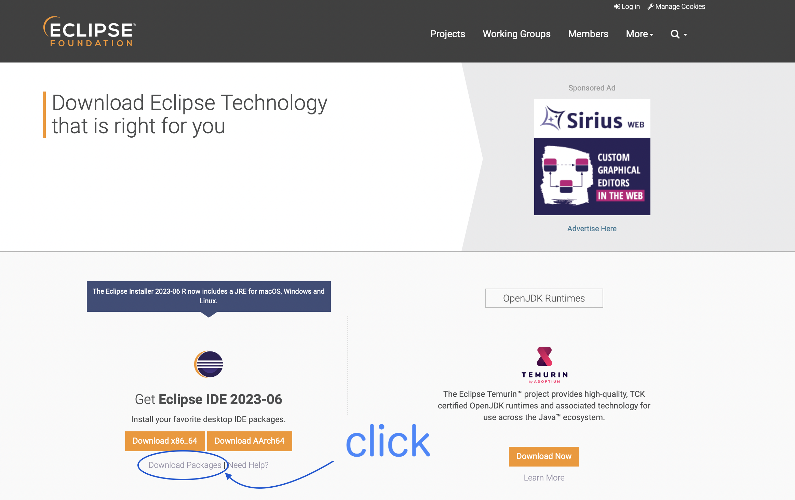
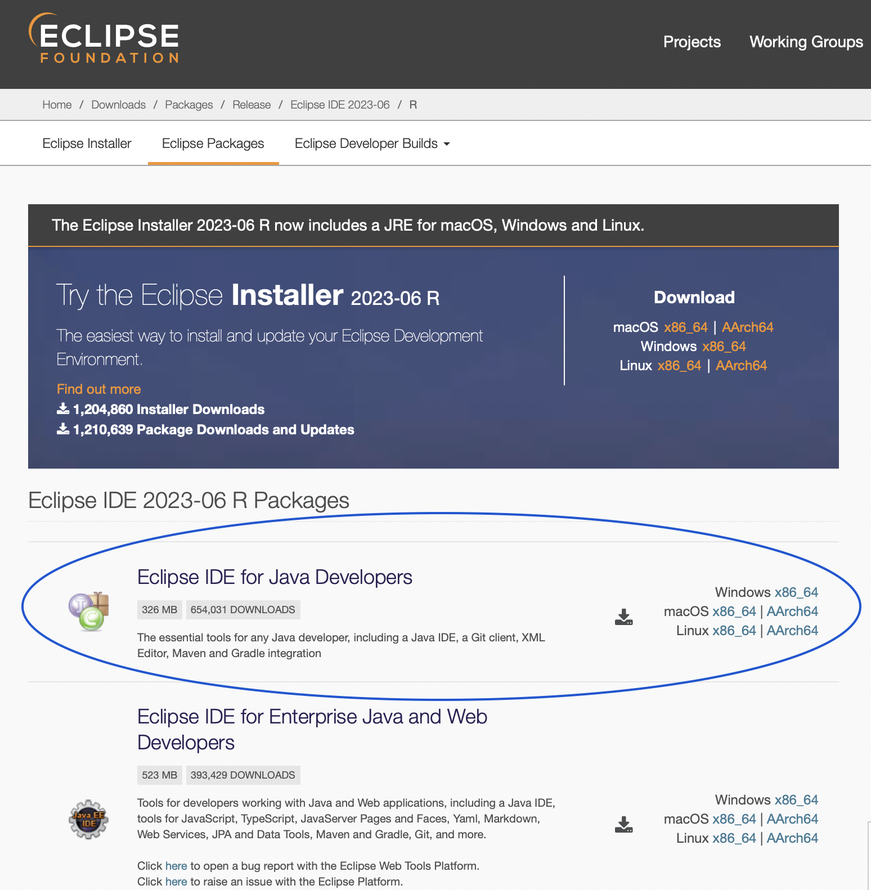
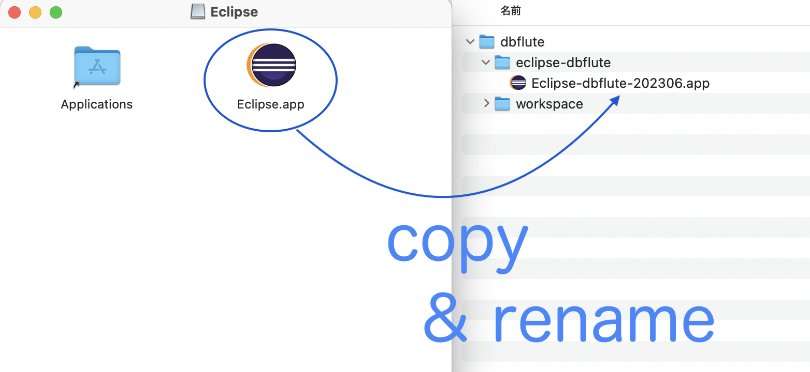
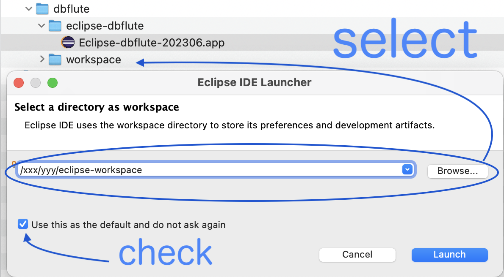
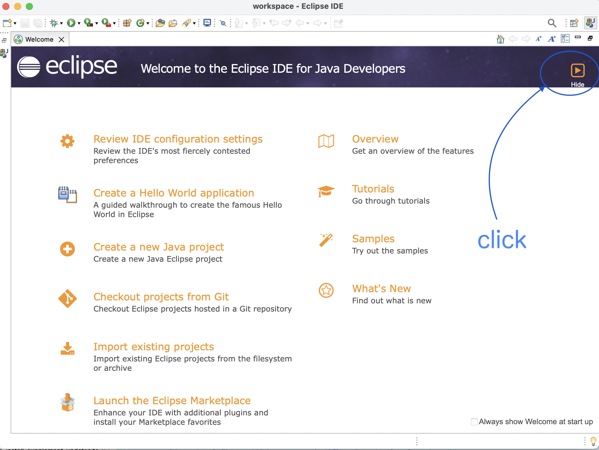
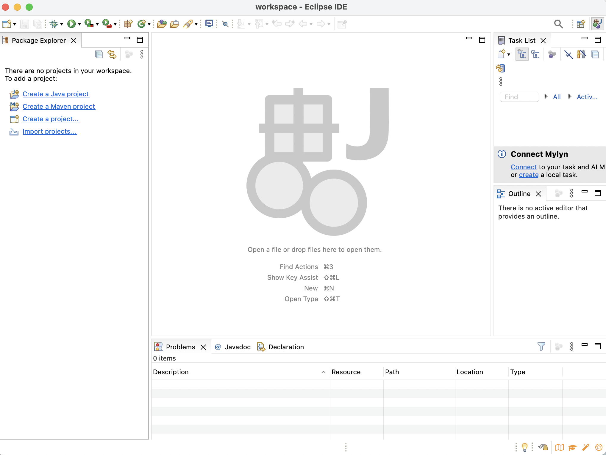

Eclipseおすすめインストール＆ビルドまで
ダウンロード
まず、"Eclipse download" でググって、Eclipseのダウンロードのページに行きます。
click Download Packages
そして、Download Packages のリンクをクリックして、パッケージのダウンロードページに行きます。
図 : Download Packagesをクリック 
{kind=link}
download Java Developers
Eclipse IDE for Java Developersをダウンロードします。自分のOSに合わせたリンクをクリックしましょう。
図 : for Java Developersをダウンロード 
{kind=link}
シンプルなEclipseがおすすめ
まず、インストーラーは使わない。インストーラーを使うと、変にインストーラーとのつながりでハマりやすいので単純に置いて使う形式のものを使う方がおすすめです。
そして、一番シンプルなJava Developersエディションがおすすめです。プラグインは必要なものを後で追加する方が、管理しやすく軽いのでおすすめです。
Eclipseの配置
基本のディレクトリ構成を作成
ローカルPCの任意の場所に以下のようなディレクトリ構成を作ります。
e.g. Eclipse用のディレクトリ構成 @Directory
~/works // 任意の場所、ここでは例えばユーザーディレクトリ配下のworks
|-dbflute // プロジェクト名、ここでは例えばdbflute関連のハンズオンを想定
|-eclipse-dbflute // eclipse-[プロジェクト名] というディレクトリ名
|-workspace // 後述、ここに実際のプロジェクトをgit cloneする
このページではサンプルとして、dbflute関連のハンズオンをやる想定で、プロジェクト名を dbflute としています。 実業務で使う場合は、これから開発するサービスの名前などを入れると良いでしょう。
Eclipseをコピーして配置
ダウンロードした Eclipse を eclipse-[プロジェクト名] 配下にコピー。
そして、Macだったら .app ファイルの名前も修正。Eclipse-[プロジェクト名]-[バージョン].app にしましょう。 (.appという拡張子が非表示の設定になっていれば見えないのでお気にせず)
図 : Eclipseをコピー＆リネーム 
{kind=link}
Eclipseを起動
Macなら、.appファイルをオープンします。(ダブルクリックなど)
Macに "壊れている" 言われたら
もしMacでEclipseを開く時に "壊れているため開けません" 的なダイアログが出てきた時は、Eclipse.app に対して、ターミナル上で xattr -rc を実行してあげましょう。
e.g. Eclipse.app に xattr -rc を実行 @Command
xattr -rc ~/works/dbflute/eclipse-dbflute/Eclipse-dbflute-202306.app
workspaceの選択
一番最初の起動時には、"ワークスペースどこで起動するの？" と聞かれます。
先ほど作った workspace ディレクトリを選択しましょう。
図 : Eclipse起動時のワークスペースの選択 
{kind=link}
また、次回以降同じworkspaceで自動的に起動するために、Useのチェックを付けておくと良いでしょう。 こうすることで、実質的に "そのworkspace専用のEclipse" という感じなります。
Welcome画面をhide
図 : 初期起動時のWelcome画面をhide 
{kind=link}
しょっぱなの画面が表示される
図 : 何もしてないしょっぱなの画面 
{kind=link}
workspaceディレクトリにgit clone
これはEclipse操作ではありません。(Eclipse上でもできますが、それは知ってる人だけ)
これからEclipseで扱う予定のプロジェクトを、workspaceディレクトリ配下にgit cloneしましょう。
e.g. Eclipse用のディレクトリ構成 @Directory
~/works
|-dbflute
|-eclipse-dbflute
| |-Eclipse-dbflute-202306.app
|
|-workspace // ここで git clone
|
|-javatry // 例えば、javatryというリポジトリからgit cloneされたもの
| |-.git // こういう位置関係になるように
| |-src/main/java
| |-src/test/java
| |-...
|
|-lastaflute-example-maihama // マルチプロジェクトならこんな感じ
| |-.git
| |-maihama-base
| |-maihama-common
| |-maihama-dockside
| |-...
Eclipseはワークスペースドリブン
Eclipseは、シングルプロジェクトでもマルチプロジェクトでも、(Eclipseの)ワークスペースという枠組みでコードを管理します。
他のIDEでは、git cloneしたプロジェクトのディレクトリに対して Open することが多いですが、Eclipseの場合は開くは常にワークスペースです。 そのワークスペースの下にプロジェクトが並びます。
一つのワークスペースで複数のプロジェクトを扱うことができるのが特徴です。 (一方で、一個しかプロジェクトがなくてワークスペースで開きます)
ワークスペースに対応するディレクトリは、workspaceという名前でなくても良いのですが、わかりやすさのために一致させています。 ドキュメント上は、概念的なワークスペースはカタカナ、物理的なディレクトリはそのままworkspaceと表現しています。(だいたいなんとなく)
workspaceのプロジェクトをimport
これはEclipse操作です。git cloneされたプロジェクトをEclipseに認識させます。
TODO jflute making...